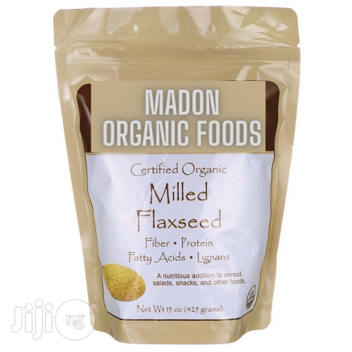

MADON MILLED FLAXSEED ORGANIC POWDER - 500g
Just two tablespoons supply: • 3 grams Omega-3 Alpha-Linolenic Acid (ALA)• 1 gram Omega-6 Linoleic Acid• Lignans Two tablespoons supply as much oil as one-half tablespoon of flax oil plus fiber, protein, and immune supporting lignans.
MADON MILLED FLAXSEED ORGANIC POWDER - 1kg
Just two tablespoons supply: • 3 grams Omega-3 Alpha-Linolenic Acid (ALA)• 1 gram Omega-6 Linoleic Acid• Lignans Two tablespoons supply as much oil as one-half tablespoon of flax oil plus fiber, protein, and immune supporting lignans.

MADON ORGANIC FLAXSEED MILK PLUS
1 glass cup per serving. Flaxseed milk or flax milk is a low-calorie low-fat alternative for dairy milks and it may be suited for people who are looking to ditch dairy products for any reason.